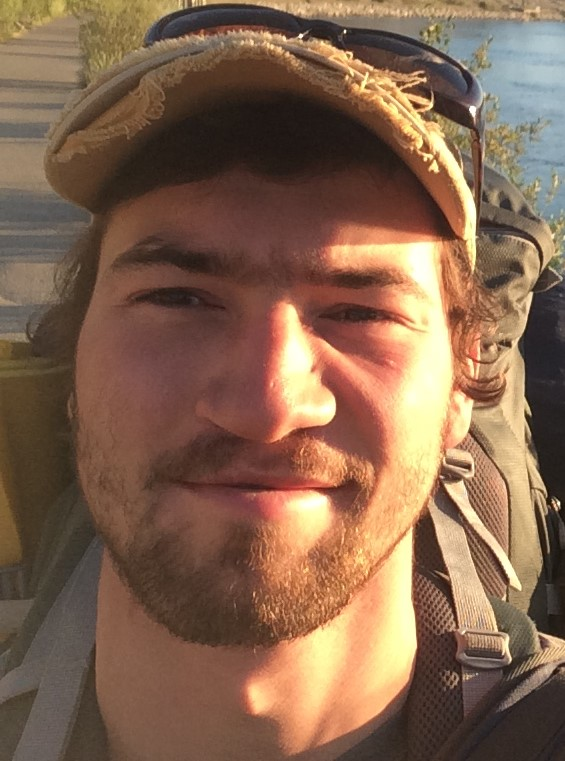
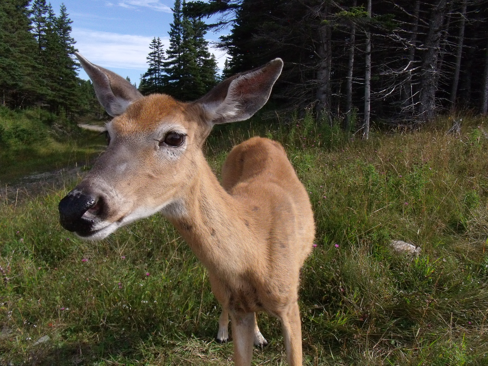
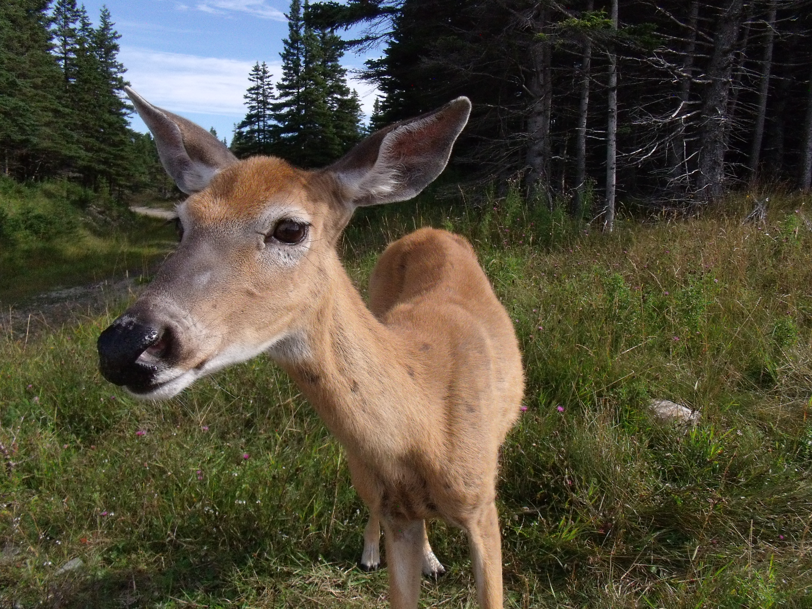
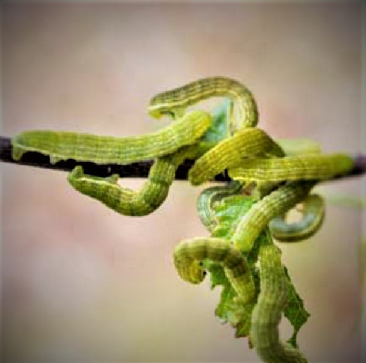
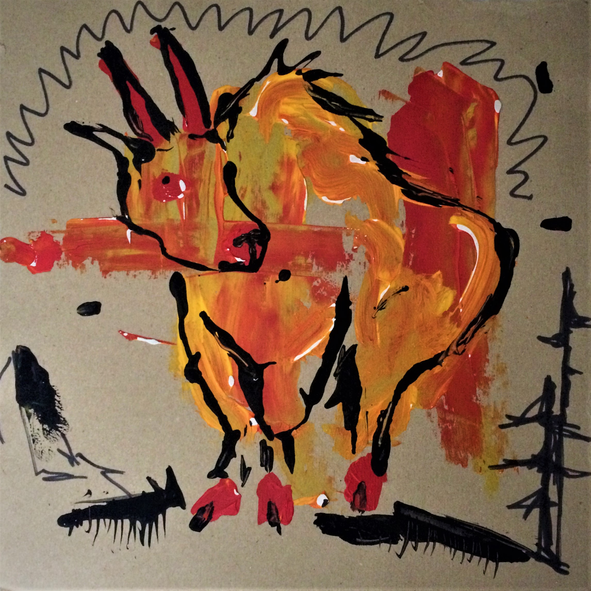

Just another
biologist website
 Hello! My name is Florent (Flo is fine), I’m a graduate researcher at University Laval, Quebec, Canada interested in several aspects related to the ecology of ungulates. I just finished my MSc project studying the drivers of vigilance in mountain goats and how it relates to their fitness. I’ve also worked on intrinsic and extrinsics determinants of molt timing in mountain goats before (see visual abstract or manuscript (see “Papers” section ).
My original motivation for research came from undergraduate project investigating the spatial behavior of caribou in relation to backcountry skiers in the Atlantic-Gaspésie mountain-dwelling caribou population, in eastern Canada.
 

Papers
E-mail me if a paywall is bothering you (see “Contact” section )!
- Déry, F., Hamel, S., & Côté, S. D. (2019). Getting ready for the winter: Timing and determinants of molt in an alpine ungulate. Ecology and Evolution, 9, 2920–2932. doi: 10.1002/ece3.4970
- Lesmerises, F., Déry, F., Johnson, C. J., & St-Laurent, M.-H. (2018). Spatiotemporal response of mountain caribou to the intensity of backcountry skiing. Biological Conservation, 217, 149–156. doi: 10.1016/j.biocon.2017.10.030
Workplaces
Interactive map of places I’ve been during my career so far. Click on a location for more information.
Future
My future research focus is to model stress factors in northern ecosystems by using near-term iterative forecasting (hereafter NTIF ) approach in the context of adaptive management of harvested resources.
More precisely, global changes are expected to alter trophic interactions involving consumer-resource and parasite-host relationships in northern ecosystems. Global warming and altered precipitation regime already favor the northern expansion of parasites and cause wide variations in the intensity and frequency of pest insect outbreaks.
In this context, I will start a PhD during fall 2020 to obtain predictions from NTIF approach and provide insights on the relative contribution of environmental variability, management decisions and stress factors on trophic interactions and the resilience of two northern ecosystems:
- I will model the dynamics of winter tick abundance, distribution, and their effects on moose population dynamics in eastern North America.
- I will also investigate the impact of geometrid moths’ outbreaks in subarctic mountain birch forests of Norway.
In both systems, several hypotheses and relationships need to be included to accurately predict the effect of stress factors, which is why I consider NTIF the best approach to quantify where and what information must be combined to actual knowledge.

larvae; credit
Climate as a common driver in both systems
In both systems, climate as a major role in the impact of stress factors. Indeed, cold temperature and snow cover limit winter ticks fall activity, late-winter reproduction and survival, whereas co-occurrence and abundance patterns of two geometrid moth species largely depend on temperature and birch phenology. I plan to combine several variables available at coarse and fine spatial scale and will access data inputs on yearly to daily timescale.
Collaborative science and research partners
I am now developing the pilot phase of a collaborative science program that will start this spring 2020, in which we will invite wildlife enthusiasts to submit moose observations and pictures of camera-traps. This program will provide demography and condition data in the moose system at finer spatiotemporal scale. As for the birch and moth system, I will have access to extensive database from the Climate-ecological Observatory for Arctic Tundra (COAT ).
About

“arting” on a
pizza box
I speak english and french, and I know around 16 words of italian (excluding the pasta ones). I could be considered as an highly irregular artist, as I sometimes crave drawing and painting in the next minute, ending up using the back of a pizza box, or anything close that will act as a spontaneous medium. I like blues, jazz root, some folk, and other music as well. I play some guitar (always the same blues rhythm over and over again), but I’m better with a harmonica.
I also like screwdrivers, and no I’m not talking about the drink (the actual handtool; although I do like the drink too), especially when they have a wooden handle.
Contact
Postal address : Département de biologie, U. Laval - 1045 av. de la médecine, Québec (Qc), G1V 0A6
 Carrier pigeon : Université Laval ; Birdcage #15 - slot #12
Carrier pigeon : Université Laval ; Birdcage #15 - slot #12
Feel free to contact me if you’d like to ask questions about my work, shared interests or insights!